全部天數📍 所有行程
4/16 (四)啟程與大須
4/17 (五)吉卜力樂園
4/18 (六)上高地秘境
4/19 (日)立山黑部
4/20 (一)市區巡禮
4 / 16 (四) 名古屋抵達
02:10 - 06:00
MM722 TPE ✈ NGO
抵達名古屋機場，開啟旅程。
Morning
New Poppy & 四間道
老建築改建咖啡廳、歷史街區散策。
Evening
大須地區漫遊
大須觀音參拜、商店街小吃、萬松寺白龍演出。
4 / 17 (五) 吉卜力樂園
09:30 - 17:00
吉卜力主題公園
大倉庫 15:00 入場。重點：魔女之谷、龍貓森林。
Evening
熱田蓬萊軒
名古屋必吃鰻魚飯三吃。
4 / 18 (六) 上高地秘境
07:30
名古屋出發
Bic Camera 集合。前往上高地（春季剛開山）。
4 / 19 (日) 立山黑部雪牆
Full Day
雪之大谷震撼體驗
扇澤進出。穿越黑部水壩，漫步室堂最高雪牆。
4 / 20 (一) 市區巡禮與賦歸
Morning
名古屋城 & 熱田神宮
看金鯱與本丸御殿、參拜三神器草薙劍。
22:45
NGO ✈ TPE
返抵台北。
景點攻略
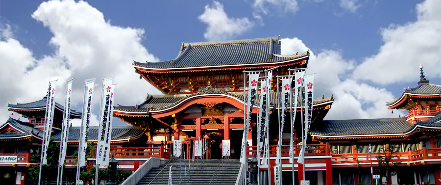
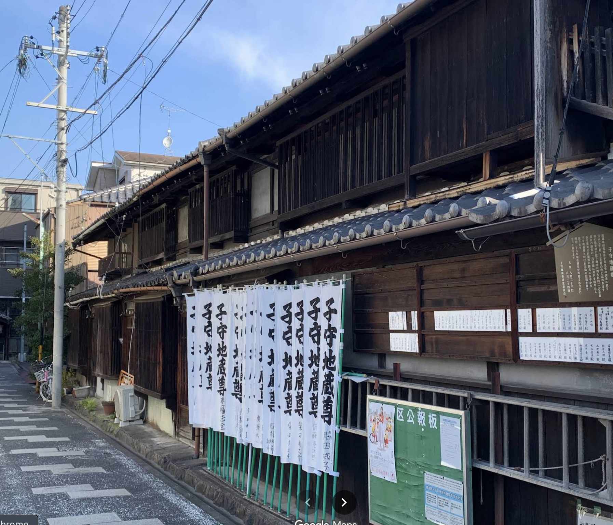
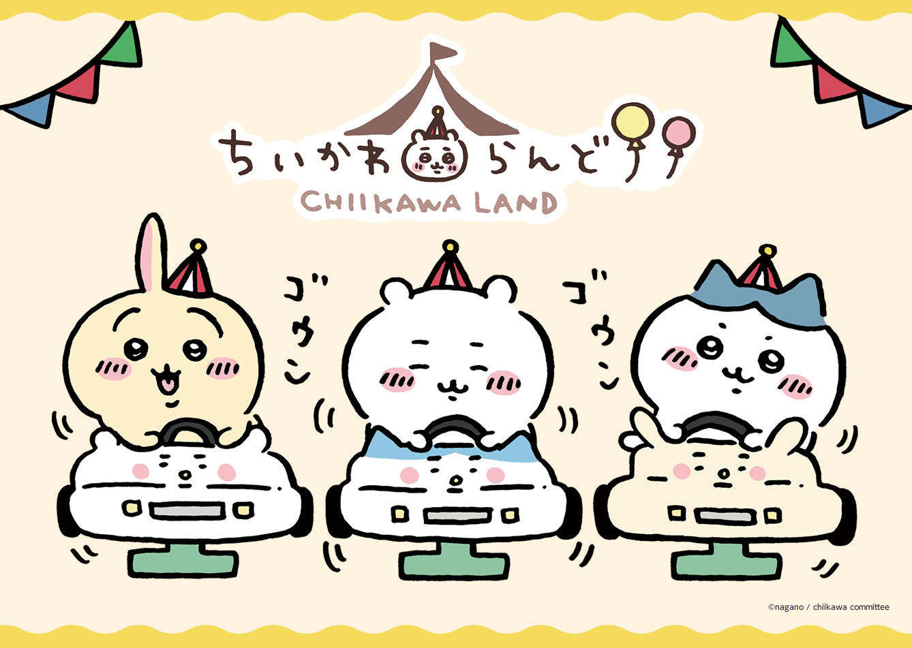
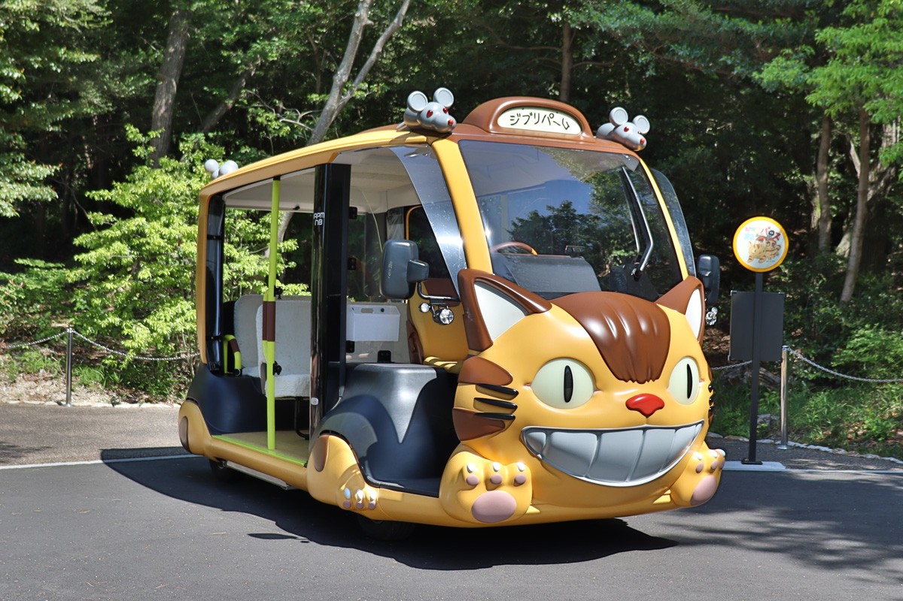
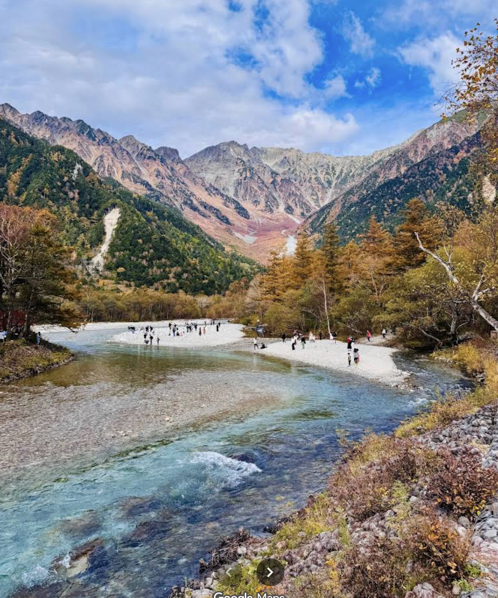
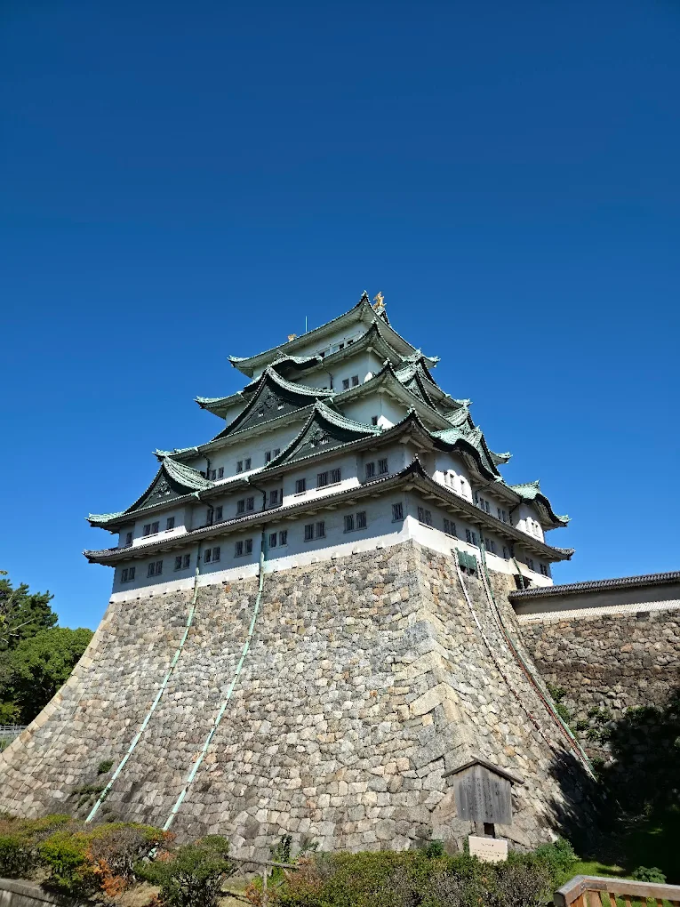
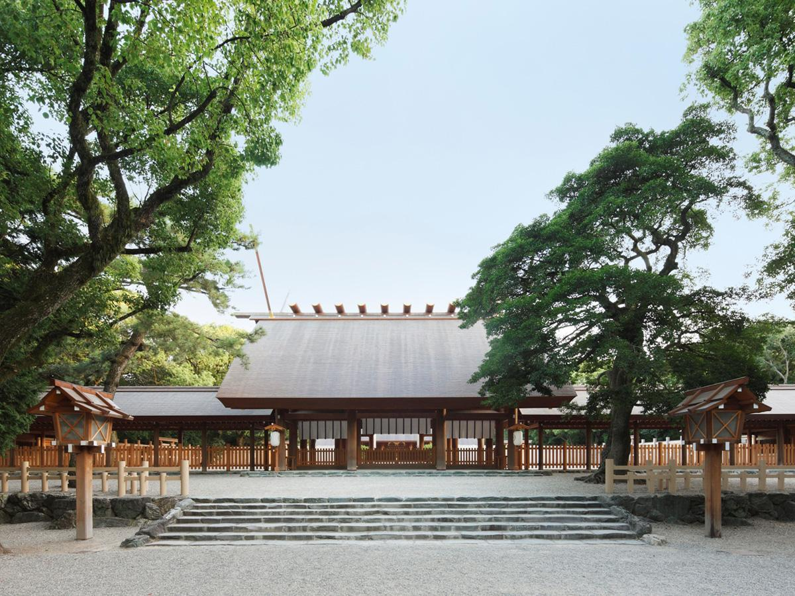
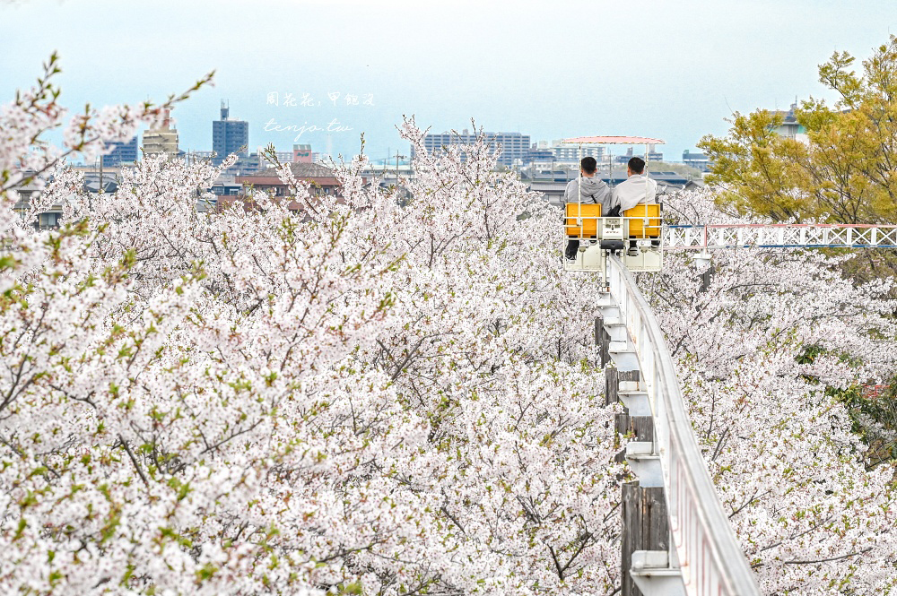
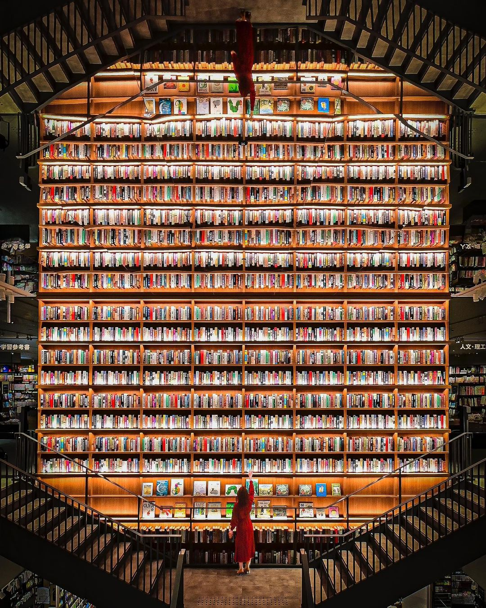
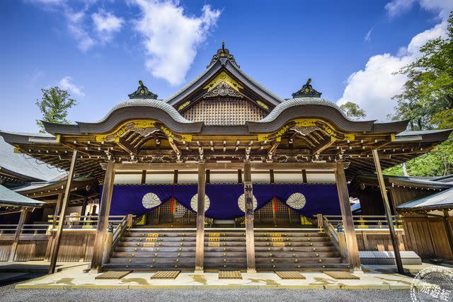
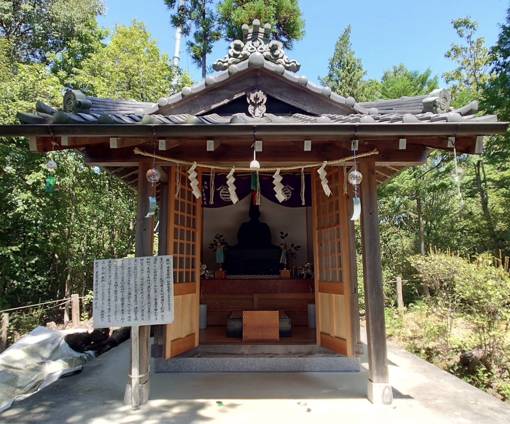
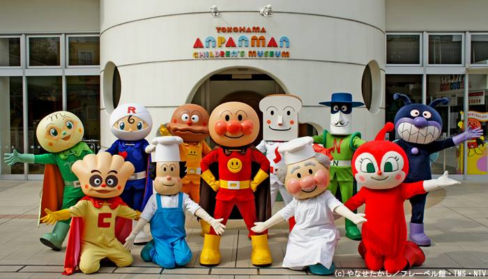
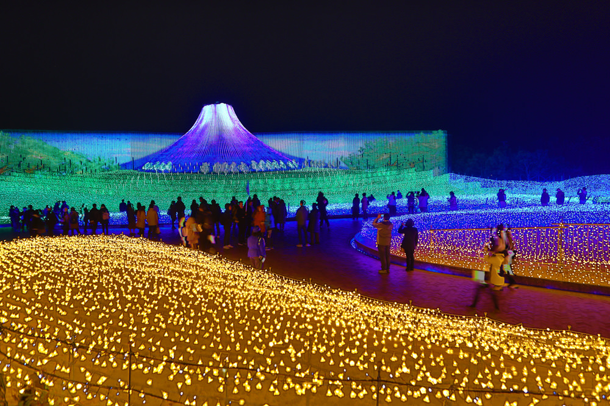
美食攻略
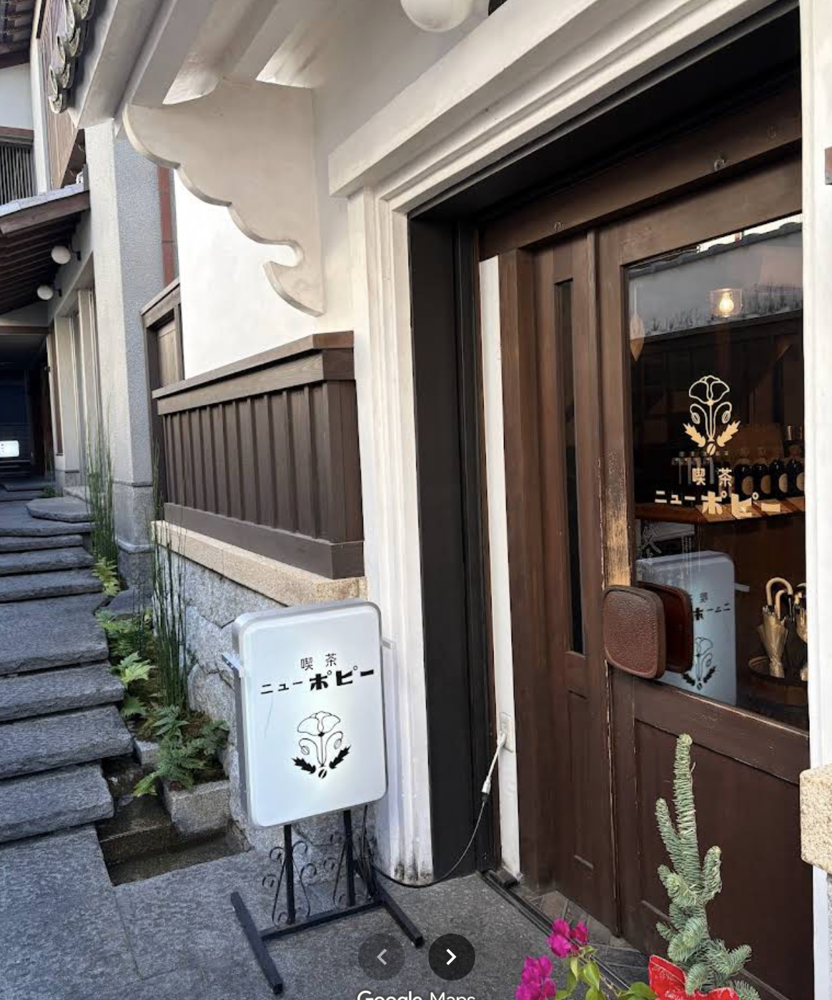
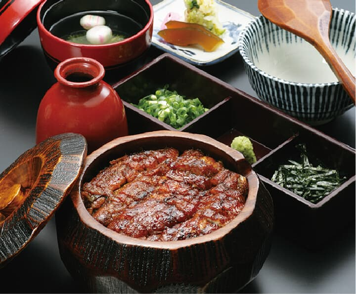
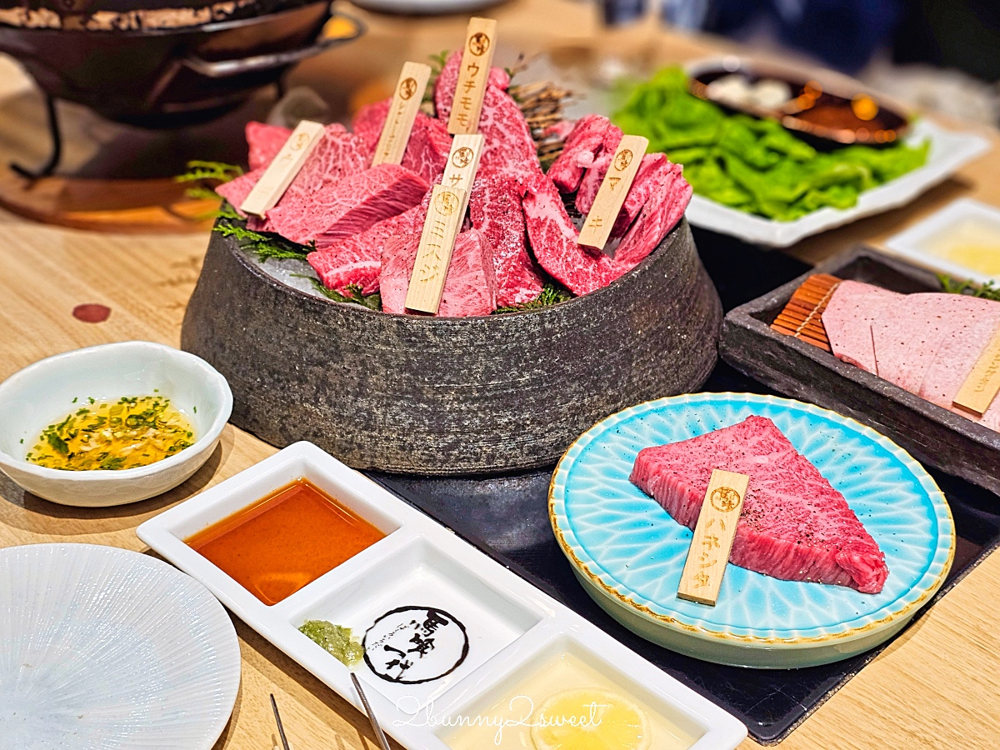